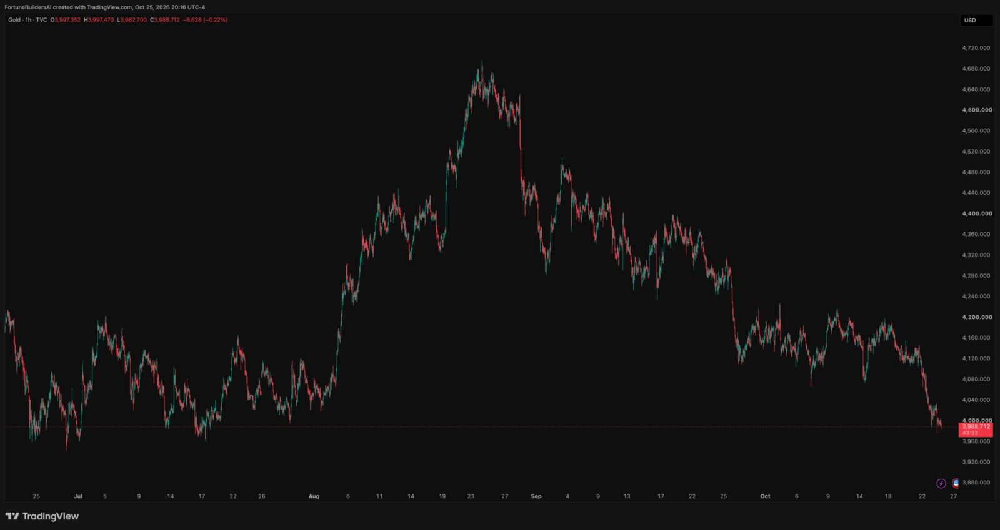

BAJISTA
La lectura era de presión vendedora tras perder USD 4,100. Un rebote no cambiaba la dirección por sí solo.

Esta era la lectura publicada antes de la semana: el oro había perdido el nivel de USD 4,100. La Fed y los datos económicos podían cambiar el escenario.
Una lectura directa para preparar tu semana.
La lectura era de presión vendedora tras perder USD 4,100. Un rebote no cambiaba la dirección por sí solo.
Si una vela de 4 horas cerraba por encima, el análisis bajista debía revisarse.
Miércoles 28 de octubre · 2:00 p. m. Miami / 1:00 p. m. Colombia. Podía generar volatilidad.
La conclusión necesita verificar los cierres y la secuencia del precio frente al plan anterior.
Lo que dijimos: la semana del 19 al 23 de octubre partía de una lectura neutral con ligero sesgo correctivo, con referencias en USD 4,100 y 4,220.
Lo que observamos: la referencia posterior publicada fue USD 3,988.712, por debajo de 4,100.
Conclusión: este dato por sí solo no demuestra cuándo ni cómo se cumplieron los criterios del análisis anterior. La evaluación completa queda pendiente.
Las zonas explican la lectura; no son órdenes de compra o venta.

Gráfico de referencia de la edición histórica · 25 de octubre de 2026.
Una vela de 4 horas cerrando por encima obligaba a revisar la lectura bajista. El siguiente nivel a observar era 4,100.
Zona de decisión: el oro podía rebotar o continuar bajo presión.
Un cierre de 4 horas por debajo mantenía la presión bajista según el plan original.
Ejemplo basado en la edición publicada. Se debe verificar de nuevo el calendario para cada semana.
Las expectativas de tasas pueden mover el dólar y los rendimientos, y con ellos influir sobre el oro.
La edición anterior destacaba estos datos como una posible fuente de volatilidad. Sus fechas deben verificarse en cada nueva edición.
El primer movimiento puede revertirse. Conviene observar si el precio sostiene la dirección.
Cuando se publique una actualización revisada, aparecerá aquí con su fecha y hora.
Dos formas de acompañar tu lectura del mercado.

Organiza tu análisis en TradingView con referencias visuales de entrada, riesgo y objetivos.

Analiza el mercado con un mentor y conoce el proceso detrás de la metodología Kill Zone + Liquidez.
La dirección es una interpretación educativa basada en información disponible al momento de publicación. Los niveles indican cuándo revisar el escenario, no garantizan el comportamiento del mercado. Cada usuario decide si opera y administra su propio riesgo.